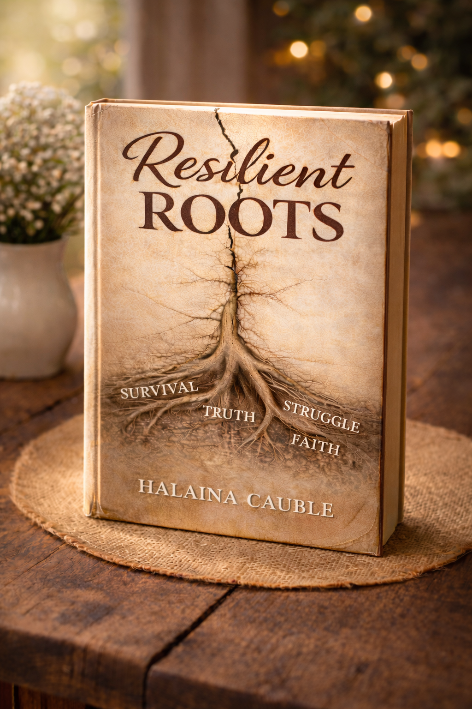

A memoir of survival, faith, and the courage to begin again.
Resilient Roots traces a journey of survival, faith, family, and the courage to begin again. From childhood in Ramallah to rebuilding life in the United States, Halaina Cauble tells a story of loss, resilience, and the quiet strength it takes to reclaim your life.
Follow updates, book news, and events for Resilient Roots.
Follow on Facebook